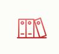
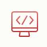
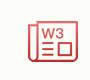

HTML/HTML5 标签
HTML颜色
CSS1,2,3
JavaScript
HTML DOM
jQuery
jQuery Mobile
VBScript
ASP
ADO
ASP.NET
PHP5.1
XML DOM
XSLT 1.0
XPath 2.0
XSL-FO
WML1.1
W3C 术语表
字符集HTML字符集
HTML ASCII
HTML ISO-8859-1
HTML符号
实例/案例HTML实例
CSS实例
XML实例
JavaScript实例
JavaScript对象实例
HTML DOM实例
jQuery实例
jQuery Mobile实例
XML DOM实例
DHTML实例
AJAX实例
VBScript实例
ASP实例
ADO实例
SVG实例
WAP实例
测验/考试HTML测验
HTML5测验
XHTML测验
CSS测验
XML测验
JavaScript测验
jQuery测验
SQL测验
ASP测验
PHP测验
代码验证验证HTML
验证CSS
验证XHTML
验证XML
验证WML
领先的Web技术教程-全部免费
在 w3school，你可以找到你所需要的所有的网站建设教程。
从基础的 HTML 到 CSS，乃至进阶的 XML、SQL、JS、PHP 和 ASP.NET。
从左侧的菜单选择你需要的教程！
完整的网站技术参考手册
我们的参考手册涵盖了网站技术的方方面面。
其中包括W3C标准技术：HTML、CSS、XML 。以及其他技术，诸如 JavaScript、PHP、SQL 等。
在线实例测试工具
在 w3school，我们提供上千个实例。
通过使用我们的在线编辑器，你可以编辑这些例子，并对代码进行实验。
快捷易懂的学习方式
一寸光阴一寸金，因此，我们为您提供快捷易懂的学习内容。
在这里，您可以通过一种易懂的便利的模式获得您需要的任何知识。
如何入手？
什么是一个Web建设者需要学习的知识呢？
W3School将为您回答这个问题，在您成为专业 Web 开发者的路上助一臂之力。
如果您是初学者，请您阅读《网站构建初级教程》。
如果您是开发者，请您阅读《网站构建高级教程》。
W3School新闻
CSS3参考手册已上线，敬请批评指正
W3School更新信息
参考手册：PHP Calendar函数 参考手册:PHP Date？Time函数 教程：HTML教程
W3School友情链接
HTML
HTML5
XHTML
CSS
CSS3
TCP/IP
浏览器脚本Javas
HTML DOM
jQuery
jQuery Moblie
AJAX
JSON
DHTML
E4X
WMLScript
服务器脚本PHP
SQL
ASP
ADO
VBScript
XML教程XML
DTD
XML DOM
XSL
XSLT
XSL-FO
XPath
XQuery
Xlink
XPointer
Schema
XForms
WAP
SVG
Web ServicesWeb Services
WSDL
SOAP
RSS
RDF
.NETASP.NET
Web Pages
Razor
MVC
Web Forms
建站手册网站构建
万维网联盟(W3C)
浏览器信息
网站品质
语义网
职业规划
网站主机
网络媒体
关于W3School
帮助W3School